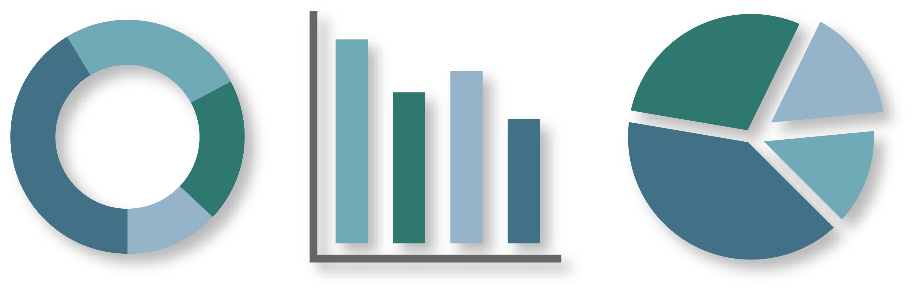
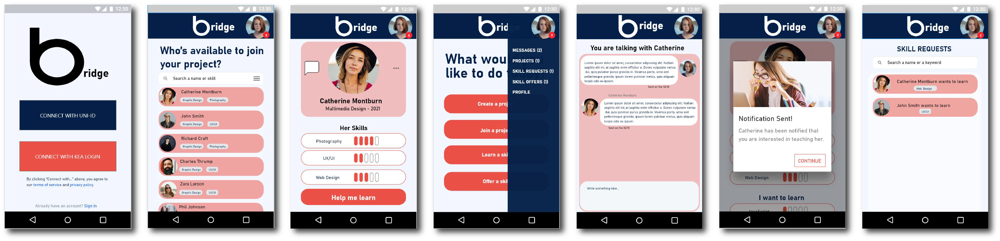

BASIC UX
In the theme Basic UX I learned how to understand the interaction between users and user interfaces. I also gained basic knowledge on what theories, tools and methods to use for research, design and testing a digital product in development. I used a selection of UX methods and learned how to present my product and to communicate my research.
03.01.01 - Data collection
Assignment’s focus:
The focus is on individual and group exercises within research and analysis.
What I learned:
I extended my knowledge on all four types of research included in the project. I gained knowledge on how to present the results from my research in an easy and exciting way.
Documentation:
03.03.01 - Prototype

Assignment’s focus:
This was a group project. Our goal was to build a XD prototype of a mobile website using UI kit. The website should help new international students in Copenhagen to find accommodation. The provider of the site is the Danish government - the Ministry of Higher Education and Science.
My role in the project:
In this project my responsibilities were: conducting the research on conventions regarding design, content and functionality, as well as the research on digital communication targeted towards an international audience. I Also took part in conducting the ‘Think Aloud Test’.
What I learned:
I learned that by simplicity (using just a few colors and typefaces) and visual hierarchy in the design of the page, the user can find the necessary information quicker. Conventionality (as to the navigation bar and the filters) makes it even easier and more natural for the user to complete any desired action. I learned the importance of copy and microcopy in any digital product and how to use UI kits.
Prototype and documentation:
03.04.01 - Design sprint
Assignment’s focus:
This is a group project. The aim is to create a native app concept which would improve student life and studying for KEA students. Our app is called "Bridge the Gap". The idea of app is to enable peer-to-peer knowledge and skills exchange among KEA students.
My role in the project:
I was the main decider during the Design Sprint week. I was also in charge of creating the documentation file and the Style tile for the app and the second person in charge of the copy and microcopy. I also participated in the creation of the questions for the test.
What I learned:
The week was quite intense, I improved my multitasking skills and working under pressure. I learned how project organization and management works. I was introduced to team roles. I learned about all the steps in Design Sprint. I was introduced to mapping and pitching for the first time.